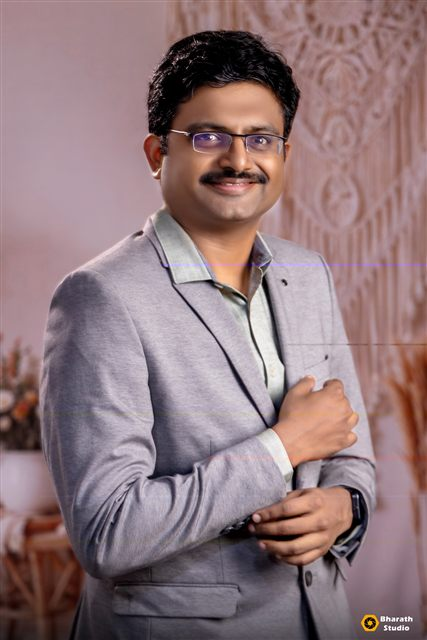
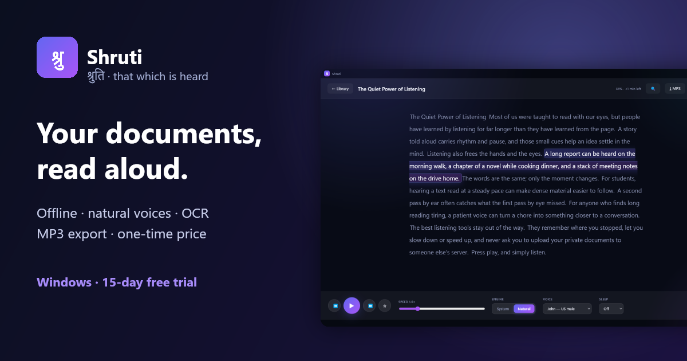

Hello, I'm
Madan Kumar PC
- Cambridge Programme Coordinator & Educational Consultant
- The CAP Accredited Counsellor
- AI, EdTech & Global Perspectives
- 10+ Years in Education
- 5 Years in IT
I spent five years in IT consulting at Ernst & Young and Infosys — then moved into education, where I coordinate Cambridge programmes across 3 Cambridge campuses (of 4), run exams as Exam Controller, and lead a Future Pathways counselling team that has guided 500+ students toward their undergraduate futures. I am part of the training team that takes 400+ staff through 50 hours of professional development a year, advise schools on AI and EdTech adoption, and bring a practical bridge between technology and pedagogy to everything I do.

"The illiterate of the 21st century will not be those who cannot read and write, but those who cannot learn, unlearn, and relearn."
— Alvin TofflerWhere Should You Start?
Tell me who you are — I'll point you to the right place
Teacher training with named workshops, outlines and durations — CBSE-to-Cambridge induction, Exams Officer bootcamp, AI for educators — backed by a dated record of 400+ staff trained per cycle. Cambridge setup advisory alongside.
See training for schoolsFuture Pathways is the free guidance site I built and run — careers, courses, countries, university guides, opportunities and deadlines, by grade. CAP-accredited 1:1 counselling for Grades 9–12 sits behind it.
Go to Future PathwaysReady-to-use Cambridge teaching packs for IGCSE and A Level subjects, plus posts written for the staffroom. Workshops for your whole department are under Training in the menu.
Browse resourcesAbout Me
Educator · Counsellor · Lifelong Learner
I coordinate Cambridge academic programmes across 3 Cambridge campuses (of 4) as HQ Coordinator and Exam Controller, lead a Future Pathways (FP) team that has helped 500+ students plan their undergraduate futures, and advise schools on AI and EdTech adoption — drawing on five years in IT consulting at Ernst & Young and Infosys before moving into education.
As Professional Development Coordinator I am part of the training team that runs whole-school training for 400+ staff three times a year, helping every teacher reach 50 hours of professional development — on Cambridge curriculum delivery, pedagogy, and practical AI tools in the classroom. See the trainings delivered.
Outside of work, you can often find me buried in a book, exploring new learning, sketch noting or engaging in meaningful discussions. I firmly believe that learning is a lifelong process, and it is important to stay up-to-date with the latest trends and research in education and career guidance.
Apps I Build
Windows apps for teachers and students · 15-day free trial, one-time licence

Drishti — Markdown Viewer for Windows
Best for: Teachers, coordinators, students and anyone reading AI-generated notes
A fast, private Markdown viewer that draws flowcharts, maths, tables and callouts the moment you open a file, then turns it into a print-ready PDF or Word document in one click. Works offline; your files never leave your PC.

Shruti — Offline Read-Aloud for Windows
Best for: Students, teachers, busy professionals and anyone whose eyes tire of long reading on screen
Drop in a PDF, a Word file, an e-book or a scanned page, press play, and listen. Natural voices read it aloud entirely on your PC, the sentence being read is highlighted, your place is remembered, and any document can be saved as an MP3. Works offline; your files are never uploaded.
Resources & Study Materials
Curated teaching aids for Cambridge subjects · Ready to use in class